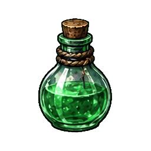

あなたは死んだのではない。 一度目の人生を終了しただけだ。
転生、寿命、徳、罪、記憶。 すべてが管理される冥府で、世界の正体を知る。
本当にいいのか？
徳位・名前・装備・道具・モン・魂の資質・竜の血・試練の進行など、保存された記録はすべて失われる。この操作は取り消せない。
記録を消せなかった。ブラウザの保存設定を確認してくれ。
閻魔庁 七日巡回の印
画面をタップして閉じる
地図を開いた時点の現在地を示しています。
ミュートは音量の設定を保ったまま、すべての音をまとめて消します。明るさはゲーム画面だけに適用され、文字や設定画面の読みやすさは維持されます。
iPhone/iPadは共有メニューの「ホーム画面に追加」から起動すると全画面で遊べます。
魂籍は、端末を越えてあなたの業を記録する。
魂籍へ入れば、別の端末でも同じ徳位・装備・記憶を呼び戻せる。
魂籍台帳を準備しています…